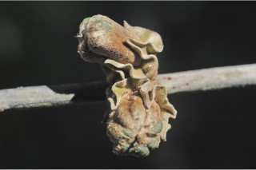
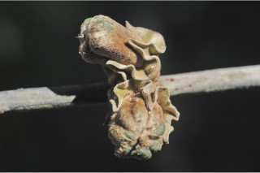

Trees up to 8 m tall.
8 ಮೀ. ಎತ್ತರದವರೆಗೆ ಬೆಳೆಯುವ ಮರಗಳು.
8 മീറ്റര് വരെ ഉയരത്തില് വളരുന്ന മരങ്ങള്.
மரம், 8 மீ. உயரம் வரை வளரக்கூடியது
Bark blackish, smooth; blaze pink.
ತೊಗಟೆ ಕಪ್ಪಾಗಿದ್ದು ನಯವಾಗಿರುತ್ತದೆ; ಕಚ್ಚು ಮಾಡಿದ ಜಾಗ ನಸುಗೆಂಪು ಬಣ್ಣ ಹೊಂದಿರುತ್ತದೆ.
മിനുസമാര്ന്നതും കറുത്ത നിറത്തിലുളളതുമായ പുറംതൊലി; വെട്ട്പാടിന് പിങ്ക്നിറം.
மரத்தின் பட்டை கருப்பு நிறமுடையது, வழுவழுப்பானது, உள்பட்டை பிங்க் நிறமுடையது
Branchlets terete.
ಕಿರುಕೊಂಬೆಗಳು ದುಂಡಾಗಿರುತ್ತವೆ.
ഉപശാഖകള് ഉരുണ്ടതാണ്.
சிறிய நுனிக்கிளைகள் குறுக்குவெட்டுத் தோற்றத்தில் வளையமானது.
Leaves simple, alternate, distichous; petiole to 2 cm long, terete; lamina 13-20 x 4-7 cm, elliptic to oblong-lanceolate, apex acuminate, base attenuate, glabrous, chartaceous; secondary_nerves ca. 15 pairs, slender; tertiary_nerves broadly reticulate, not prominent.
ಎಲೆಗಳು ಸರಳವಾಗಿದ್ದು ಪರ್ಯಾಯ ಹಾಗೂ ಸುತ್ತು ಜೋಡನಾ ವ್ಯವಸ್ಥೆ ಯಲ್ಲಿದ್ದು ಕಾಂಡದ ಎರಡೂ ಕಡೆಯ ಎದುರು ಬದರಿನ ಸಾಲಿನಲ್ಲಿರುತ್ತವೆ; ಎಲೆ ತೊಟ್ಟುಗಳು 2 ಸೆಂ. ಮೀ.ಉದ್ದವಿದ್ದು ದುಂಡಾಗಿರುತ್ತವೆ; ಪತ್ರಗಳು 13 – 20 X 4 – 7 ಸೆಂ.ಮೀ. ಗಾತ್ರ, ಅಂಡವೃತ್ತ ಮಾದರಿಯಿಂದ ಹಿಡಿದು ಚತುರಸ್ರ - ಭರ್ಜಿವರೆಗಿನ ಆಕಾರ ಹೊಂದಿದ್ದು ಕ್ರಮೇಣ ಚೂಪಾಗುವ ತುದಿ , ಒಳಬಾಗಿದ ಮಾದರಿಯ ಬುಡ, ಉಪ-ಕಾಗದವನ್ನೋಲುವ ಮೇಲ್ಮೈ ಹೊಂದಿದ್ದು ರೋಮರಹಿತವಾಗಿರುತ್ತವೆ ; ಎರಡನೇ ದರ್ಜೆಯ ನಾಳಗಳು ಅಂದಾಜು 15 ತೆಳುವಾಗಿರುವ ಜೋಡಿಗಳಿರುತ್ತವೆ ;ಮೂರನೇ ದರ್ಜೆಯ ನಾಳಗಳು ವಿಶಾಲ ಜಾಲಬಂಧ ನಾಳ ವಿನ್ಯಾಸ ಹೊಂದಿದ್ದು ಪ್ರಮುಖವಾಗಿರುವುದಿಲ್ಲ.
ഇലകള് ലഘുവും ഏകാന്തരമായി, തണ്ടിന്റെ രണ്ടുഭാഗത്തുമാത്രമായി അടുക്കിയതാണ്; ഉരുണ്ട ഇലഞെട്ടിന് 2 സെ.മീ നീളം; പത്രഫലകത്തിന് 13 സെ.മീ മുതല് 20 സെ.മീ വരെ നീളവും 4 സെ.മീ മുതല് 7 സെ.മീ വരെ വീതിയും ദീര്ഘവൃത്താകാരംതൊട്ട് ആയത-കുന്താകാരം വരെയുമാണ്, പത്രാഗ്രം ദീര്ഘമാണ്, പത്രാധാരം അകവളവോടെ സാവധാനം നേര്ത്തവസാനിക്കുന്നതാണ്, അരോമിലം, കടലാസ്പോലത്തെ പ്രകൃതം; ഏതാണ്ട് 15 ജോഡി നേര്ത്ത ദ്വിതീയ ഞരമ്പുകള്; വ്യക്തമല്ലാത്ത, വീതിയേറിയ ജാലിതമായ ത്രിതീയ ഞരമ്പുകള്.
இலைகள் தனித்தவை, மாற்றுஅடுக்கமானவை, இருநெடுக்கு வரிசையிலையடுக்கம் (டைஸ்டிக்கஸ்); இலைக்காம்பு 2 செ.மீ. வரை நீளமானது, குறுக்குவெட்டுத் தோற்றத்தில் வளையமானது; இலை அலகு 13-20 X 4-7 செ.மீ., நீள்வட்டம் முதல் நீள்சதுரம்-ஈட்டி வடிவமுடையது, அலகின் நுனி வால் போன்று நீண்டது, அலகின் தளம் அட்டனுவேட், உரோமங்களற்றது, சார்ட்டேசியஸ்; இரண்டாம் நிலை நரம்புகள் 15 ஜோடிகள், மெலிதானது; மூன்றாம் நிலை நரம்புகள் பரந்த வலைப்பின்னல் அமைப்பு கொண்டது.
Flowers unisexual; male flowers, sessile axillary clusters; female flower clusters of 1-5, axillary or on older branches, sessile.
ಹೂಗಳು ಏಕ ಲಿಂಗಿಗಳಾಗಿರುತ್ತವೆ; ಗಂಡು ಹೂಗಳು ತೊಟ್ಟುರಹಿತವಾದ ಅಕ್ಷಾಕಂಕುಳಿನಲ್ಲಿರುವ ಗುಚ್ಛಗಳಲ್ಲಿರುತ್ತವೆ. ಹೆಣ್ಣು ಹೂಗಳು ಅಕ್ಷಾಕಂಕುಳಿನಲ್ಲಿ, 1 ರಿಂದ 5 ಹೂಗಳುಳ್ಳ ಗುಚ್ಛಗಳಲ್ಲಿ ಅಥವಾ ಹಳೆ ಕವಲುಗಳ ಮೇಲಿದ್ದು ತೊಟ್ಟುರಹಿತವಾಗಿರುತ್ತವೆ.
പൂക്കള് ഏകലിംഗികളാണ്; ആണ്പൂക്കള്, അവൃന്ത, കക്ഷീയ കൂട്ടങ്ങളിലുണ്ടാകുന്നു; അവൃന്തമായ പെണ്പൂക്കള്, മൂത്തശിഖിരങ്ങളിലോ, കക്ഷ്യങ്ങളിലോ, 1 മുതല് 5 വരെയുളള കൂട്ടങ്ങളായുണ്ടാകുന്നു.
ஓர்பால் மலர்கள்; ஆண்மலர்கள் காம்பற்றது, இலைக்கோணங்களில் காணப்படும்; பெண்மலர்கள் 1-5 மலர்களை கொண்ட கொத்தாக இலைக்கோணங்களில் அல்லது முதிர்ந்த கிளைகளில் காணப்படும், காம்பற்றது.
Berry, sessile, ovoid with truncate apex, 8-10 grooved, hairy; fruiting_calyx_lobes with wavy margin; seeds 10.
ಬೆರ್ರಿಗಳು ತೊಟ್ಟುರಹಿತವಾಗಿದ್ದು,ಛಿನ್ನಾಗ್ರವುಳ್ಳ ಅಂಡಾಕಾರ ಹೊಂದಿದ್ದು , 8 ರಿಂದ 10 ತೋಡುಗೆರೆ ಸಮೇತವಿದ್ದು, ರೋಮಸಹಿತವಾಗಿರುತ್ತವೆ; ಕಾಯಿಗಳ ಪುಷ್ಪಪಾತ್ರೆಯ ದಳಗಳು ತರಂಗಿತ ಅಂಚನ್ನು ಹೊಂದಿರುತ್ತವೆ;ಬೀಜಗಳು 10.
10 വിത്തുളള കായ, 8 മുതല് 10 വരെ ചാലുളളതും, രോമിലവുമായ, അറ്റം വെട്ടിമുറിച്ചതുപോലുളള അണ്ഡാകാര അവൃന്തബെറിയാണ്; കായോട് ചേര്ന്ന് നില്ക്കുന്ന ബാഹ്യദളങ്ങള്ക്ക് തരംഗിതമായ അരികുകളാണ്.
முழுச்சதைகனி (பெர்ரி), காம்பற்றது, முட்டை வடிவம் மற்றும் நுனி சதுரமானது (ட்ரன்கேட்), 8-10 பள்ளங்களுடையது, உரோமங்களுடையது; பழத்தின் புல்லி இதழ்களின் விளிம்பு அலை போன்றது; விதைகள் 10.


 
